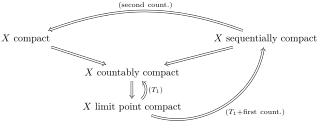

As useful as the Heine-Borel theorem is in characterizing compactness in \(\R^n\text{,}\) it relies in part on a non-topological property: namely, boundedness with respect to the Euclidean, box, or taxicab norm. In this section we investigate the relation of compactness to various related topological properties that turn out to be equivalent to compactness in the setting of metric spaces. First we meet our new compact-like properties.
Definition1.16.1.Limit point compact.
A topological space \(X\) is limit point compact if all infinite subsets of \(X\) have a limit point.
Definition1.16.2.Sequentially compact.
A topological space \(X\) is sequentially compact if every sequences of elements of \(X\) has a convergent subsequence.
Theorem 1.16.3 asserts that compactness, limit point compactness, and sequential compactness are equivalent in the setting of metric spaces.
Theorem1.16.3.Compactness in metric spaces.
Let \((X,d)\) be a metric space. The following statements are equivalent.
\(X\) is compact.
\(X\) is limit point compact.
\(X\) is sequentially compact.
Our proof of Theorem 1.16.3 will involve a series of results that articulate which implications hold between these three concepts in full generality, and highlight what extra conditions are required to obtain equivalences. Before embarking on this investigation we look at two examples that illustrate two different uses of Theorem 1.16.3: namely, (a) deciding whether a given subset of a metric space is compact, and (b) showing that a given space is not a metric space.
Example1.16.4.
Theorem1.16.5.Compact implies limit point compact.
If \(X\) is compact, then \(X\) is limit point compact.
Proof.
Let \(A\) be an infinite subset of \(X\text{,}\) and let \(A'=\{x_1,x_2,\dots\}\) be any countable infinite subset of \(A\text{.}\) We will show that \(A'\) has a limit point. Assume by contradiction that \(A'\) has no limit point. Since in general the closure of a set is obtained by adding all limit points, we see that \(A'\) is closed. Since \(X\) is compact, we conclude that \(A'\) is compact. On the other hand, since no element of \(A'\) is a limit point of \(A'\) is a limit point of \(A'\text{,}\) it is easy to see that all singletons of \(A'\) are open in the subspace topology. This contradicts the compactness of \(A'\) since the open covering \(A'=\bigcup_{n=1}^{\infty}\{x_n\}\) has no finite subcover.
Remark1.16.6.Countably compact space.
A close look at our proof of Theorem 1.16.5 reveals that limit point compactness follows from a slightly weaker notion of compactness: namely, countable compactness. A space is countably compact if every countable open subcover has a finite subcover. We have the following implications:
\begin{equation*}
X \text{ compact} \implies X \text{ countably compact} \implies X \text{ limit point compact}\text{.}
\end{equation*}
It can be shown that none of these implications is in fact an equivalence. However, if \(X\) is further assumed to be \(T_1\text{,}\) then limit point compactness implies countable compactness. We record this fact schematically as follows:
\begin{equation*}
X \text{ limit point compact} \underset{(T_1)}{\implies} X \text{ countably compact}\text{.}
\end{equation*}
Theorem1.16.7.Sequential compactness implies limit point compactness.
If \(X\) is sequentially compact, then \(X\) is limit point compactness.
Proof.
We will show that sequential compactness implies countable compactness. The result then follows from Remark 1.16.6. Suppose by contradiction that the open covering \(X=\bigcup_{n=1}^\infty U_n\) has no finite subcover. It follows that we can construct a sequence \((x_n)_{n=1}^\infty\) satisfying \(x_n\notin U_1\cup U_2\cup \cdots \cup U_n\text{.}\) By sequential compactness there is a convergent subsequence \(x_{n_m}\rightarrow x\text{.}\) Since \(\{U_n\}_{n=1}^\infty\) is a covering, we have \(x\in U_{N}\) for some \(N\text{.}\) But by construction there is an \(M\) such that \(x_{n_m}\notin U_N\) for all \(m\geq M\text{.}\) A contradiction. Thus there must be a finite subcover of \(\{U_n\}_{n=1}^\infty\text{.}\)
At this point we have the following logical diagram for a general topological space. Without further assumptions on \(X\) none of the implications below is an equivalence.
Figure1.16.8.Compactness implications
We now set about elaborating on Figure 1.16.8 by adding additional properties to \(X\text{.}\) It turns out that some of the so-called countability axioms play a useful role in this regard. We will take these topics up in earnest in Section 1.18, but will introduce here, somewhat prematurely, two of these notions (viz., the first and second countable axioms).
Definition1.16.9.Local basis.
Let \(X\) be a topological space. Given \(x\in X\text{,}\) a local basis at \(x\) is a collection \(\mathcal{B}_x\) of open neighborhoods of \(x\) such that for all open \(U\) containing \(x\) there is a \(B\in \mathcal{B}_x\) such that \(B\subseteq U\text{.}\)
Definition1.16.10.First countable.
A topological space \(X\) is first countable if every \(x\in X\) has a countable local basis.
Theorem1.16.11.
Assume \(X\) is \(T_1\) and first countable. If \(X\) is limit point compact, then \(X\) is sequentially compact.
Proof.
Assume \(X\) is \(T_1\text{,}\) second countable, and limit point compact. Let \((x_n)_{n\in \Z_+}\) be a sequence in \(X\) and let \(A=\{x_n\colon n\in \Z_+\}\text{,}\) the set of entries of \((x_n)_{n\in \Z_+\}\text{.}\) If \(A\) is finite, then it is easy to see that there is a constant subsequence of \((x_n)_{n\in \Z_+}\text{,}\) and such a subsequence clearly converges. If \(A\) is infinite, then since \(X\) is limit point compact, there is a limit point \(x\) of \(A\text{.}\) Let \(\mathcal{B}=\{B_n\colon n\in \Z_+\}\) be a countable local basis at \(x\text{.}\) Replacing \(B_n\) with \(\bigcap_{i=1}^n B_n\text{,}\) we may assume that \(B_n\supseteq B_{n+1}\) for all \(n\text{.}\)
Definition1.16.12.
A topological space \(X\) is second countable if it has a countable basis.
Let \(X\) be a second countable space. If \(X\) is sequentially compact, then \(X\) is compact.
Proof.
Assume \(X\) is second countable, and let \(X=\bigcup_{i\in I}U_i\text{.}\) As we will show in Theorem 1.18.8, since \(X\) is second countable, there is a countable subcovering \(X=\bigcup_{j=1}^\infty V_j\text{,}\) where \(V_j=U_i_{j}\) for some \(i_j\in I\text{.}\) If the countable covering \(\{V_j\}_{j=1}^\infty\) had no finite subcovering, then we could construct a sequence \((x_n)_{n=1}^\infty\) satisfying \(x_n\notin U_1\cup U_2\cup \cdots\cup U_n\) for all \(n\in \Z_+\text{.}\) Since \(X\) is sequentially compact, the sequence would have a convergent subsequence \(x_{n_k}\rightarrow x\text{.}\) We must have \(x\in V_N\) for some \(N\text{.}\) But by construction \(x_{n}\notin V_N\) for all \(n\geq N\text{,}\) whence it follows that \(x_{n_k}\notin V_n\) eventually. A contradiction. We conclude that \(\{V_n\}_{n\in \Z_+}\text{,}\) and hence \(\{U_i\}_{i\in I}\) has a finite subcovering, as desired.
The following logical diagram summarizes what we know thus far. (We leave as an exercise the proof that if \(X\) is \(T_1\) and limit point compact, then it is countably compact.)

Figure1.16.14.Compactness implications
Corollary 1.16.15 now follows from a diagram chase and the fact that second countable implies first countable. (See Theorem 1.18.8.)
Corollary1.16.15.Compactness equivalences.
Let \(X\) be \(T_1\) and second countable. The following are equivalent.
\(X\) is compact.
\(X\) is limit point compact.
\(X\) is sequentially compact.
Finally, we are ready to prove Theorem 1.16.3. Since any metric space \(X\) is \(T_1\) and first countable, we have \((1)\implies (2)\implies (3)\text{.}\) To show \((3)\implies (1)\) it suffices to prove that any sequentially compact metric space is second countable. This is the result of our last theorem.
Theorem1.16.16.Metrizable+sequentially compact implies second countable.
Let \(X\) be a metric space. If \(X\) is sequentially compact, then \(X\) is second countable.
Proof.
We show first that if \(X\) is a sequentially compact metric space, then it is totally bounded: i.e., given any \(\epsilon > 0\text{,}\) we have
for some elements \(\{x_i\colon 1\leq i\leq n\}\text{.}\) Indeed, suppose by contradiction that there is an \(\epsilon\) for which this is not true. Construct a sequence as follows: choose any \(x_1\in X\text{;}\) since \(B_\epsilon(x_1)\ne X\text{,}\) we can find an element \(x_2\notin B_\epsilon(x_2)\text{;}\) in general, given choices \(x_1,x_2,\dots, x_n\text{,}\) choose
Since \(X\) is sequentially compact the the sequence \((x_n)_{n\in \Z_+}\) has a convergent subsequence \((x_{n_k})_{k\in \Z_+}\text{.}\) This is a contradiction since this sequence would not be Cauchy: indeed by construction, for any \(n_j\) and \(n_k\) with \(n_k > n_j\text{,}\) we have \(x_{n_k}\notin B_\epsilon(n_j)\text{.}\)
Since \(X\) is totally bounded, for each \(n\in \Z_+\) we have
Let \(Q=\{x_{n,i}\colon n\in \Z_+, 1\leq i\leq m_n\}\text{,}\) a countable set. It is easy to see that \(Q\) is dense in \(X\text{:}\) i.e., \(\overline{Q}=X\text{.}\) As we will show in Theorem 1.18.8, any metric space containing a countable dense subset is second countable.